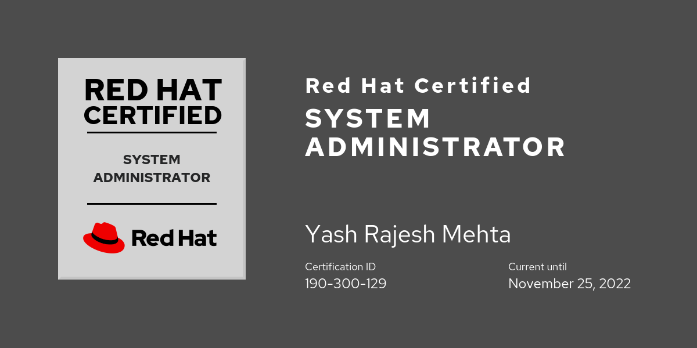
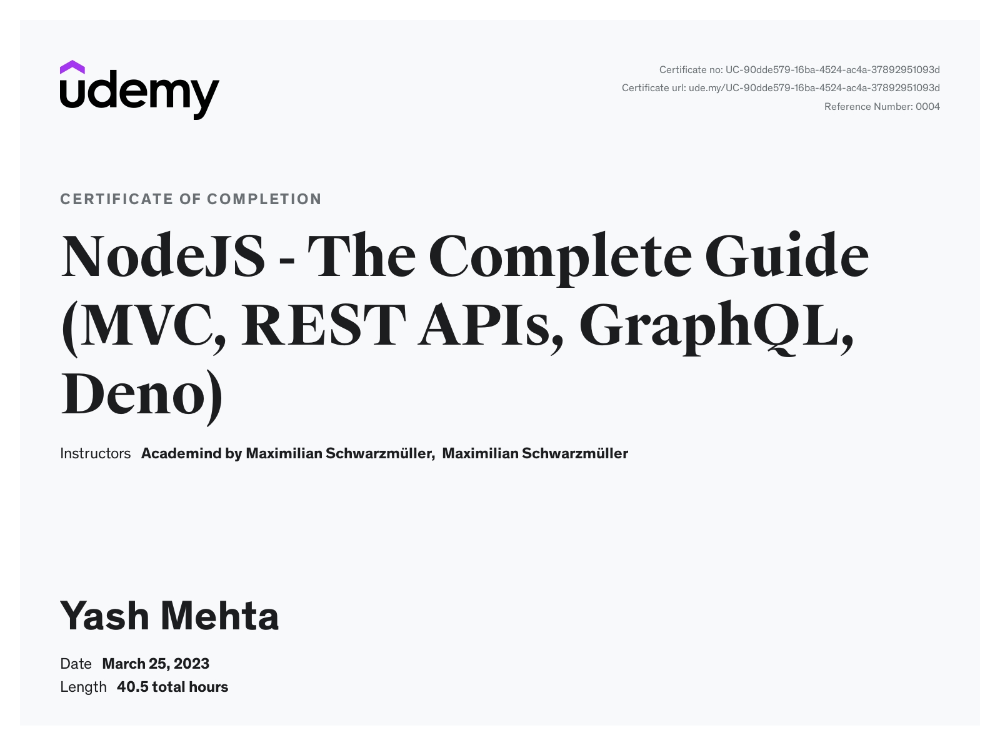
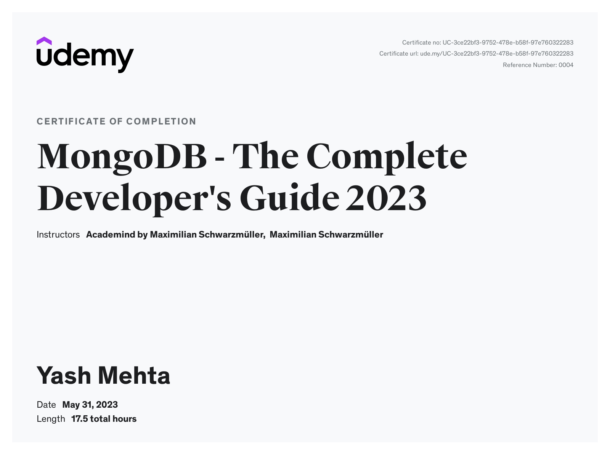
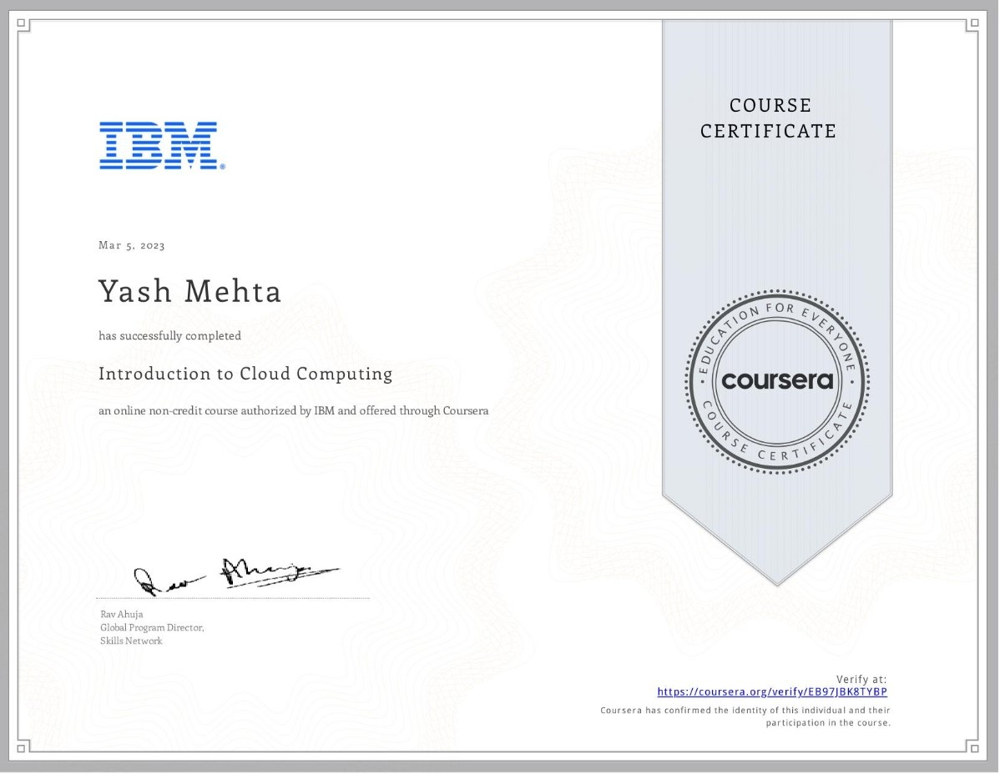

Yash Mehta

Summary
As a Node.js developer, I am highly skilled and passionate about tackling challenging projects. With a deep
understanding of Node.js and its ecosystem, I am committed to delivering high-quality, efficient, and scalable
solutions that meet the needs of clients and end-users alike.
Work Experience
-
Jr. Software Engineer - DeepCoder
2022 September - Present | Ahmedabad, India
As a Junior Backend Developer, I have honed my skills as a Developer with a strong foundation in Node.js and
its related
technologies. Developing efficient and scalable back-end solutions.
Roles and Responsibilities:
- Collaborating with cross-functional teams to understand project requirements and objectives.
- Developing server-side logic using Node.js and other related technologies.
- Designing and implementing RESTful APIs for seamless integration with front-end applications.
-
2020 October - 2022 July | Gandhinagar, India
As a Researcher Developer, I have developed and researched innovative solutions and identified 10+ new
opportunities for
product enhancement.
Roles and Responsibilities:
- Collaborating with the development team to help resolve various technical blockers.
- Developing and assessing the viability of various PoC features for product integration.
Skills
-
Languages
- Node.js: ⭐️⭐️⭐️
- JavaScript: ⭐️⭐️⭐️
- TypeScript: ⭐️⭐️⭐️
- HTML: ⭐️⭐️⭐️
-
Frameworks
- Express.js: ⭐️⭐️⭐️⭐️
- NestJs: ⭐️⭐️⭐️
-
Databases
- MongoDB: ⭐️⭐️⭐️⭐️
- PostgreSQL: ⭐️⭐️⭐️
- MySQL: ⭐️⭐️⭐️
- Redis: ⭐️⭐️
-
Tools
- Git: ⭐️⭐️⭐️
- GitHub: ⭐️⭐️⭐️
- GitLabs: ⭐️⭐️⭐️
- Docker: ⭐️⭐️⭐️
- Jira: ⭐️⭐️⭐️
- Excel: ⭐️⭐️⭐️
Projects
-
Navigation and Tracking App
Developed and designed the backend for the Mobile App, that specifically aimed at helping driving learners
prepare
for
their driving test. With over a 10,000 monthly active users.
- Used Node.js with Typescript and MongoDB to develop a scalable and reliable backend architecture.
- Developed RESTful API's that allows the app to communicate with a variety of backend services.
- The backend architecture was designed to support over 100,000 concurrent users.
- Implemented security systems that protects user data from unauthorized access.
- Used Radis to cache responses of frequently called API.
-
Invoicing Application
Developed and maintained a Node.js backend for the Invoicing Application, a user-friendly software designed to
streamline the process of creating and emailing invoices to various clients.
- Used NestJS to develop a scalable and secure backend architecture.
- Designed and implemented a RESTful API that allows the app to communicate with a variety of backend services.
Patents
Update Management System - 2021
Patent Pending
Over the Air Update Management System for IOT devices within Local Networks that can
- Update multiple types of IoT systems automatically.
- Reduce unexpected downtime due to auto updates by 100%.
Certifications
Red Hat Certified System Administrator - 2019

Courses
-
Udemy
-
NodeJS - The Complete Guide (MVC, REST APIs, GraphQL, Deno) - Maximilian Schwarzmüller

-
MongoDB - The Complete Developer's Guide 2023 - Maximilian Schwarzmüller

-
The Ultimate MySQL Bootcamp: Go from SQL Beginner to Expert - Colt Steele
-
Coursera
-
Introduction to Cloud Computing - IBM

-
Getting Started with Git and GitHub - IBM
Education
- Bachelor of Science (IT) - Sikkim Manipal University, India (2021)
Languages
- English
- Hindi
- Gujarati
- Marathi
Contact